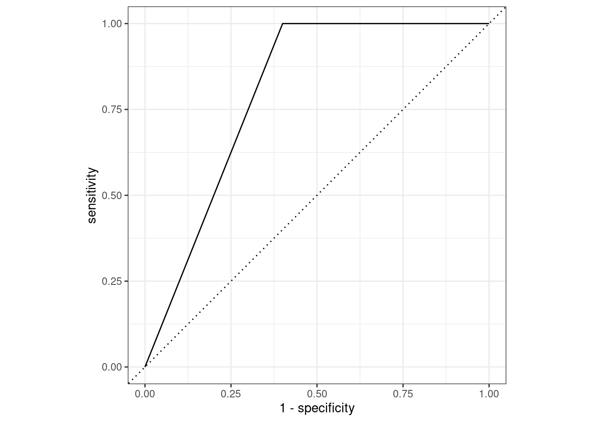
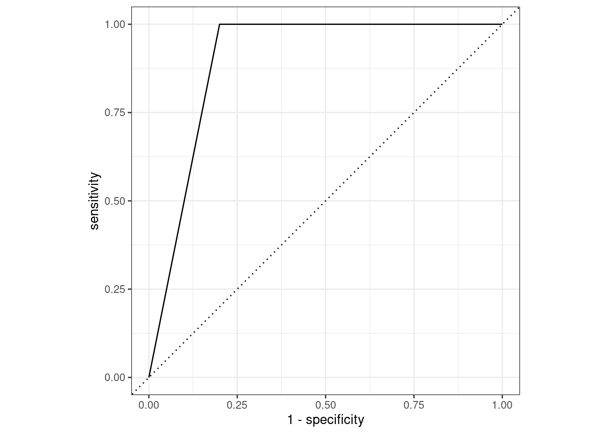

library(randomForestSRC)
randomForestSRC 3.2.3
Type rfsrc.news() to see new features, changes, and bug fixes.
library(yardstick)library(randomForestSRC)
randomForestSRC 3.2.3
Type rfsrc.news() to see new features, changes, and bug fixes.
library(yardstick)dat <- read.csv("data/ch10_dat1.csv")
dat$X1 <- factor(dat$X1)
dat$X2 <- factor(dat$X2)
dat$X3 <- factor(dat$X3)
dat$Y <- factor(dat$Y)랜덤 포레스트 학습
set.seed(5678)
rf <- rfsrc(
Y ~ .,
data = dat,
ntree = 4, # 4 trees
mtry = 2, # 2 candidate variables at each split
samptype = "swr" # sampling with replacement
)각 트리에 사용된 학습 데이터
matrix(
rf$forest$nativeArrayTNDS$tnRMBR,
ncol = 4
) [,1] [,2] [,3] [,4]
[1,] 5 2 3 3
[2,] 2 2 3 2
[3,] 2 2 3 1
[4,] 2 4 5 4
[5,] 1 4 1 4학습된 트리
plot(get.tree(rf, 1))plot(get.tree(rf, 2))plot(get.tree(rf, 3))plot(get.tree(rf, 4))Out-of-bag(OOB) 예측: 확률
rf$predicted.oob no yes
[1,] 1.0 0.0
[2,] 1.0 0.0
[3,] 0.5 0.5
[4,] 0.5 0.5
[5,] 0.5 0.5OOB 예측: 범주
rf$class.oob[1] no no yes yes no
Levels: no yesOOB 예측 성능: 정오분류표
results <- cbind(dat, pred_class = rf$class.oob)
cm <- conf_mat(results, truth = "Y", estimate = "pred_class")
cm Truth
Prediction no yes
no 2 1
yes 1 1OOB 예측 성능: 여러 척도
summary(cm)# A tibble: 13 × 3
.metric .estimator .estimate
<chr> <chr> <dbl>
1 accuracy binary 0.6
2 kap binary 0.167
3 sens binary 0.667
4 spec binary 0.5
5 ppv binary 0.667
6 npv binary 0.5
7 mcc binary 0.167
8 j_index binary 0.167
9 bal_accuracy binary 0.583
10 detection_prevalence binary 0.6
11 precision binary 0.667
12 recall binary 0.667
13 f_meas binary 0.667library(JOUSBoost)JOUSBoost 2.1.0library(rpart)
library(rpart.plot)dat <- read.csv("data/ch10_dat1.csv")
dat$X1 <- factor(dat$X1)
dat$X2 <- factor(dat$X2)
dat$X3 <- factor(dat$X3)
dat$Y <- factor(dat$Y)X <- model.matrix(Y ~ . - 1, dat) # create predictor variable matrix
y <- ifelse(dat$Y == "yes", 1, -1)fit <- adaboost(X, y, tree_depth = 1, n_rounds = 3)for (i in seq_along(fit$trees)) {
rpart.plot(fit$trees[[i]], roundint = FALSE)
}
fit$alphas[1] 0.6931472 0.9729551 1.2824747확률: \(P(y = 1 | x)\)
posterior1 <- predict(fit, X = X, type = "prob")
round(posterior1, 2)[1] 0.68 0.12 0.04 1.00 0.00범주: \(y \in {1, -1}\)
pred_class <- predict(fit, X = X, type = "response")
pred_class[1] 1 -1 -1 1 -1예측성능 - 정오분류표
fit$confusion_matrix yhat
y -1 1
-1 3 0
1 0 2library(gbm)Loaded gbm 2.1.9This version of gbm is no longer under development. Consider transitioning to gbm3, https://github.com/gbm-developers/gbm3library(rpart)
library(rpart.plot)dat <- read.csv("data/ch10_dat3.csv"){gbm} 패키지 사용모형 학습
gbm_fit <- gbm(
Y ~ X,
data = dat,
distribution = "gaussian",
n.trees = 5,
interaction.depth = 1,
n.minobsinnode = 1,
shrinkage = 1, # step size = 1
bag.fraction = 1 # no subsampling of training data
)모형에 기반한 예측
dat_p <- data.frame(
X = seq(min(dat$X), max(dat$X), length = 1000)
)
plot(dat$X, dat$Y,
pch = 16, xlab = "X", ylab = "Y",
main = paste0("Observed vs Prediction: {gbm} package")
)
lines(dat_p$X, predict(gbm_fit, newdata = dat_p), col = "red")Using 5 trees...{rpart}와 loop 사용# initial model
dat_m <- dat
dat_m$pred <- mean(dat$Y)
dat_p$pred <- mean(dat$Y)
iter <- 5
for (i in 1:iter) {
# negative gradients
dat_m$ngrad <- dat$Y - dat_m$pred
# plot layout
layout(matrix(c(1, 2, 3, 3), nrow = 2, byrow = TRUE))
# plot observed point and prediction
plot(dat$X, dat$Y,
pch = 16, xlab = "X", ylab = "Y",
main = paste0("Observed vs Prediction: Iteration ", i)
)
lines(dat_p$X, dat_p$pred, col = "red")
# plot residuals
plot(dat_m$X, dat_m$ngrad,
pch = 16, xlab = "X", ylab = "Residual",
main = paste0("Residual: Iteration ", i)
)
# fit C to negative gradients
fit <- rpart(
ngrad ~ X,
data = dat_m,
control = rpart.control(maxdepth = 1)
)
# plot tree
rpart.plot(fit, main = paste0("Residual estimation: Iteration ", i))
# update prediction
dat_m$pred <- dat_m$pred + predict(fit, newdata = dat_m)
dat_p$pred <- dat_p$pred + predict(fit, newdata = dat_p)
}# plot final prediction
par(mfrow = c(1, 1))
plot(dat$X, dat$Y,
pch = 16, xlab = "X", ylab = "Y",
main = paste0("Observed vs Prediction: Final")
)
lines(dat_p$X, dat_p$pred, col = "red")library(gbm)
library(yardstick)
library(ggplot2)dat <- read.csv("data/ch8_dat1.csv")
dat$class <- dat$class - 1 # set class to be 0 or 1모형 평가: ROC curve, AUC
result0 <- data.frame(
class = factor(dat$class, levels = c(1, 0)),
posterior1 = rep(0.5, nrow(dat))
)
roc_auc(result0, truth = "class", posterior1)# A tibble: 1 × 3
.metric .estimator .estimate
<chr> <chr> <dbl>
1 roc_auc binary 0.5autoplot(roc_curve(result0, truth = "class", posterior1))모형 추정
fit1 <- gbm(
class ~ x1 + x2,
data = dat,
distribution = "bernoulli",
n.trees = 1,
interaction.depth = 1,
n.minobsinnode = 1,
shrinkage = 1, # step size = 1
bag.fraction = 1 # no subsampling of training data
)모형 평가: ROC curve, AUC
result1 <- data.frame(
class = factor(dat$class, levels = c(1, 0)),
posterior1 = predict(fit1, type = "response")
)Using 1 trees...roc_auc(result1, truth = "class", posterior1)# A tibble: 1 × 3
.metric .estimator .estimate
<chr> <chr> <dbl>
1 roc_auc binary 0.8autoplot(roc_curve(result1, truth = "class", posterior1))
모형 추정
fit2 <- gbm(
class ~ x1 + x2,
data = dat,
distribution = "bernoulli",
n.trees = 2,
interaction.depth = 1,
n.minobsinnode = 1,
shrinkage = 1, # step size = 1
bag.fraction = 1 # no subsampling of training data
)모형 평가: ROC curve, AUC
result2 <- data.frame(
class = factor(dat$class, levels = c(1, 0)),
posterior1 = predict(fit2, type = "response")
)Using 2 trees...roc_auc(result2, truth = "class", posterior1)# A tibble: 1 × 3
.metric .estimator .estimate
<chr> <chr> <dbl>
1 roc_auc binary 0.9autoplot(roc_curve(result2, truth = "class", posterior1))